Smart Event Parking: Solving High-Demand Urban Congestion
Designing an end-to-end mobile parking experience to seamlessly handle high-demand parking spaces around major attractions, stadiums, and city events—from radius-based discovery and indoor bay guidance to live session tracking.
Event radius discovery → Cluster spot selection → Spot details → Indoor multi-level bay navigation
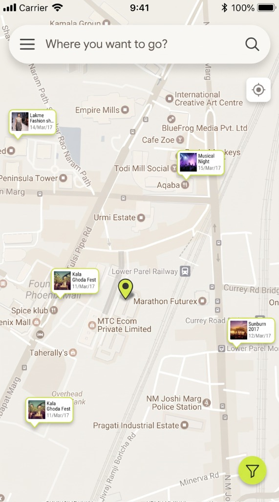
1. Event Map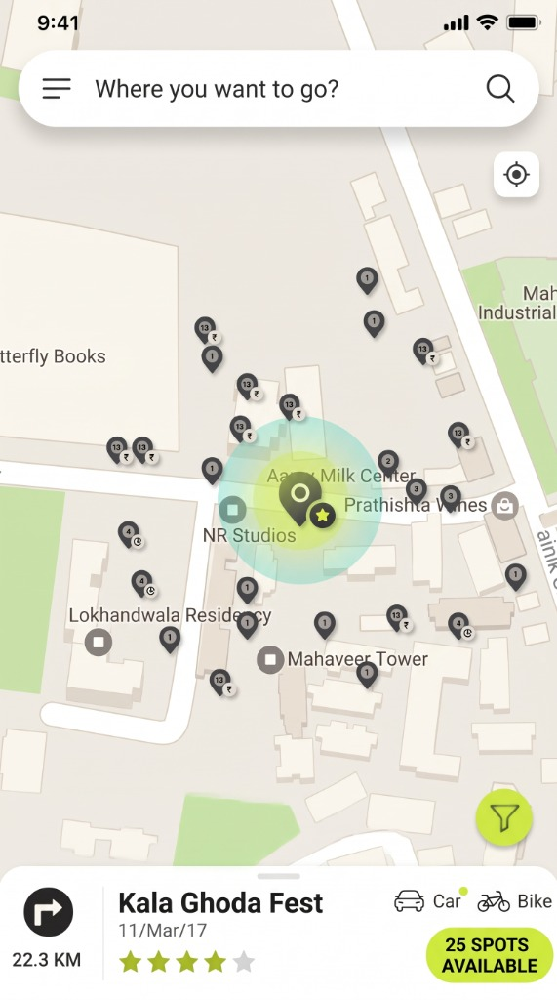
2. Radius & Spots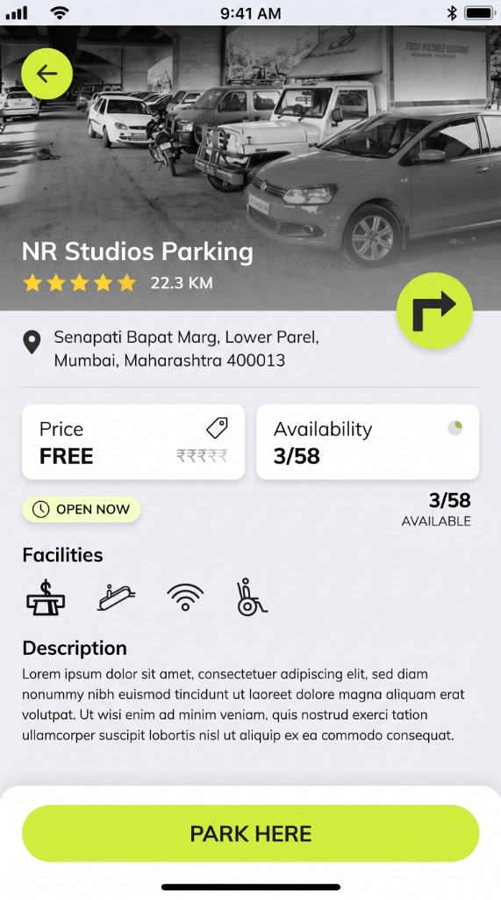
3. Spot Detail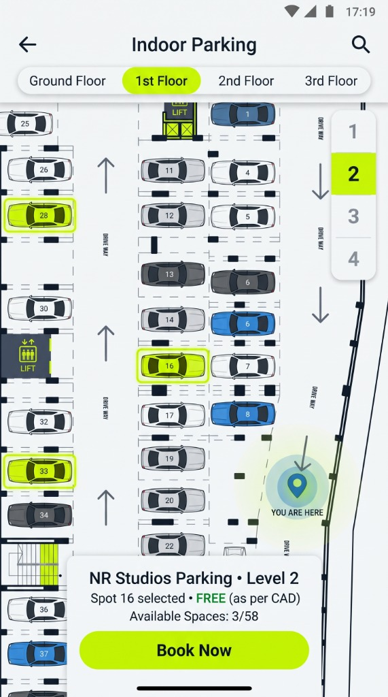
4. Indoor Bay MapStrategic Context
Product Designer (End-to-End UX, Interaction Design & Prototyping)
Urban Mobility, Event Logistics & Smart City Parking
Museums, Stadiums, Festivals, Malls & High-Traffic Restaurants
11-Screen Interactive Mobile Flow & Marvel Prototype
The Core Problem
Finding a parking spot near places of major attractions—such as museums, stadiums, cultural festivals, or popular restaurants—is a major source of frustration for urban drivers. The problem compounds exponentially during special events and occasions when thousands of visitors converge on the same destination simultaneously.
High-Demand Event Parking Pain Points
- • Zero visibility into surge capacity: Drivers arrive at stadiums or festival venues (like Kala Ghoda Fest or Wankhede Stadium) without knowing which nearby lots still have open bays.
- • Opaque pricing & parking types: No easy way to distinguish between free street spots, paid lots, open grounds, or indoor mall parking within walking distance.
- • Vehicle-type mismatch: Two-wheeler (bike) and four-wheeler (car) capacities are rarely separated in standard map searches.
- • Last-100-meters confusion: Standard GPS drops drivers at the venue gate, offering no guidance inside multi-level parking structures or large event grounds.
- • Manual time & fee anxiety: Drivers lose track of how long they've parked and lack transparent hourly receipt calculations.
The design challenge was to create a frictionless, real-time mobile experience that handles peak event demand—guiding users from initial destination discovery all the way to an exact indoor bay and automated checkout.
Strategic Design Goals
Event-Aware Discovery
Proactively highlight major city events within a 10km radius alongside instant location search.
Door-to-Bay Navigation
Bridge outdoor turn-by-turn GPS with indoor multi-floor bay mapping and AR path overlays.
Transparent Session Lifecycle
Provide live parking duration timers, automated hourly billing receipts, and community spot ratings.
End-to-End Screen Architecture & User Flow
Rather than treating parking as a static directory, I structured the application around the driver's real-time context—from pre-trip planning to arriving at a crowded venue, finding an exact bay, and checking out.
Landing Map & Event-First Search
When the user opens the app, the landing screen immediately renders an interactive map highlighting all major events happening within a configurable radius (e.g., 10km) or across the city as the user pans (such as Lakme Fashion Show, Kala Ghoda Fest, Musical Night, and Sunburn).
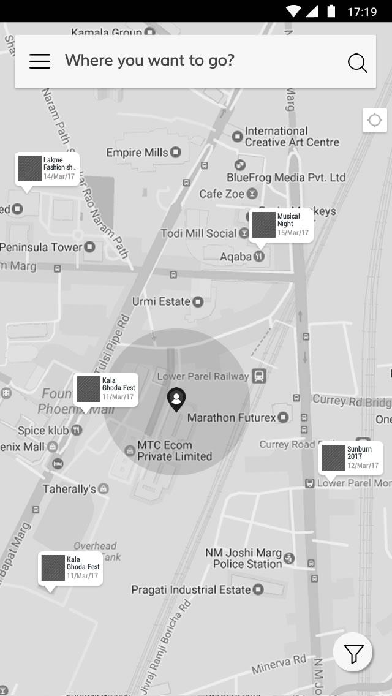
Landing Page
- •Highlights major events with date badges directly on the map
- •Prominent "Where you want to go?" search bar at the top
- •Quick-access GPS recenter and floating filter trigger
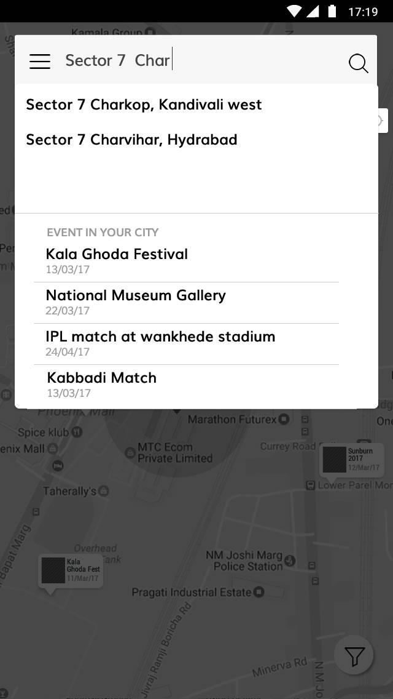
Search & Auto-Suggest
- •Real-time location auto-suggest dropdown as the user types
- •Dedicated "Events in Your City" quick-list (e.g., IPL match at Wankhede Stadium, National Museum Gallery)
- •One-tap focus zooms the map directly to the event zone
Event Radius Focus, Filtering & Spot Clusters
Selecting an event card or destination zooms the map into a highlighted radius around the venue, displaying all available paid, free, and event-specific parking pins—including numbered cluster markers where multiple spots exist.
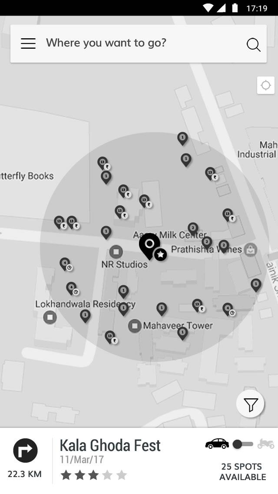
Event/Spot Bottom Sheet
Displays distance (22.3 KM), instant navigation button, event rating & date, live count of available spots (25 Spots Available), and a Car vs. Bike toggle switch.
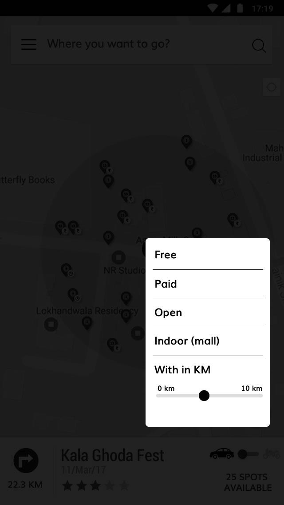
Granular Filter Popup
Allows drivers to narrow results by Free, Paid, Open, or Indoor (Mall) parking, plus an interactive 0–10 km radius slider to trade off walking distance vs. availability.
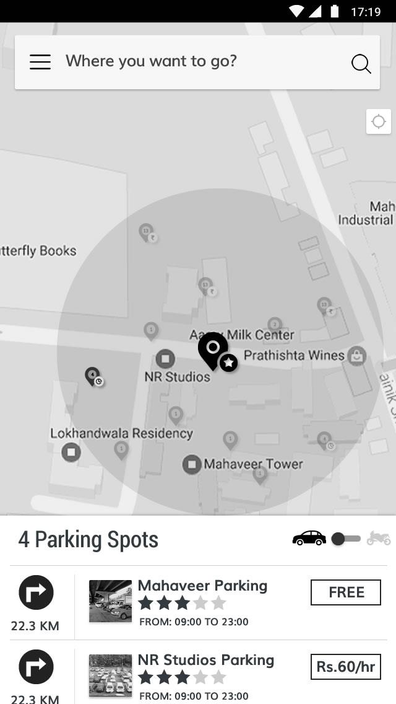
Swipe-Up Spot Listing
Tapping a numbered map cluster (2+ spots) reveals a scannable list (Mahaveer Parking - FREE, NR Studios Parking - Rs.60/hr) with hours, ratings, and direct navigation CTAs.
Spot Detail Verification & Multi-Modal Navigation
Drivers can either launch navigation immediately from the list or tap a card to inspect full facility metadata before committing. Once en route, the app transitions from street-level GPS to proactive arrival notifications and indoor bay guidance.
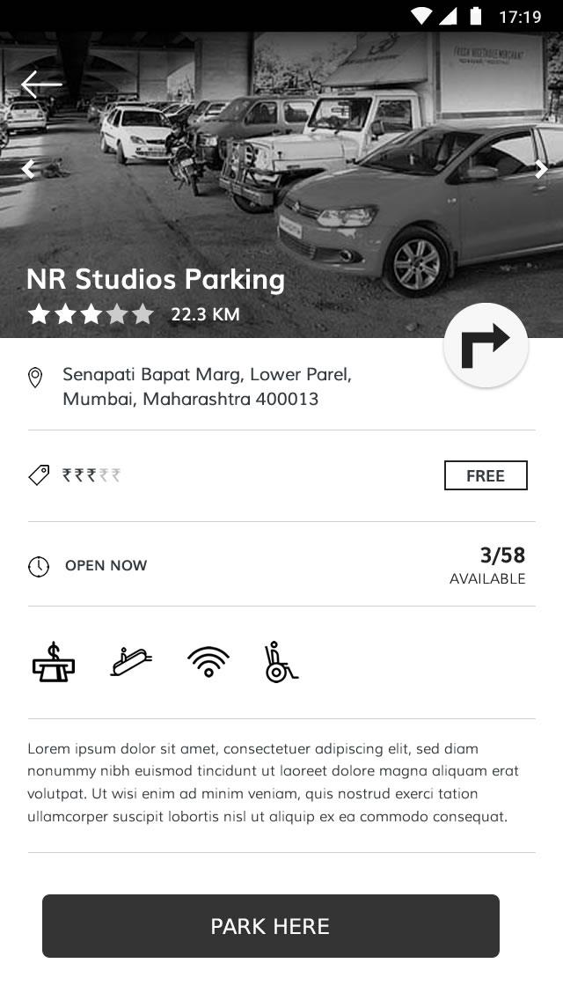
Spot Landing Page
- •Facility photo, full address, price tier, and real-time capacity (OPEN NOW • 3/58 Available)
- •Amenity icons (attendant/toll booth, CCTV security, Wi-Fi, wheelchair accessibility)
- •Dual CTAs: floating top direction button and primary bottom "PARK HERE" action
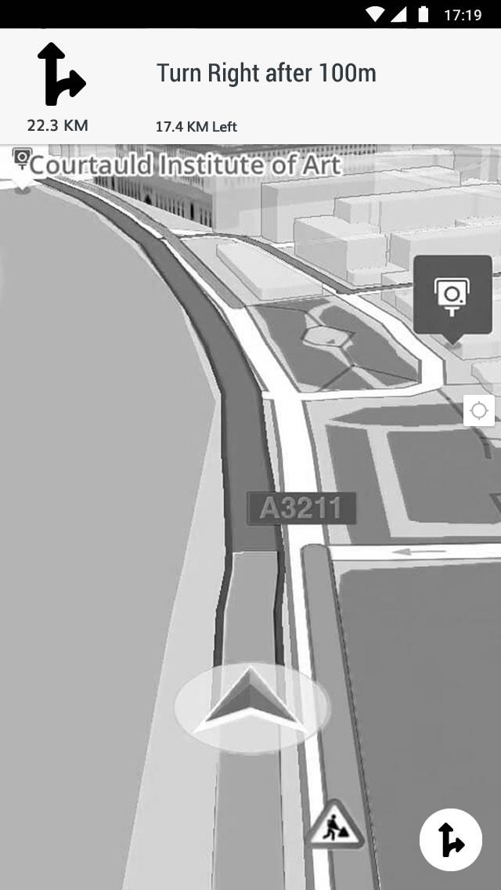
Turn-by-Turn Street Navigation
- •Directions from current location to the selected parking facility
- •Live traffic updates including roadwork or maintenance alerts
- •Alternative route selection and voice-over turn-by-turn guidance
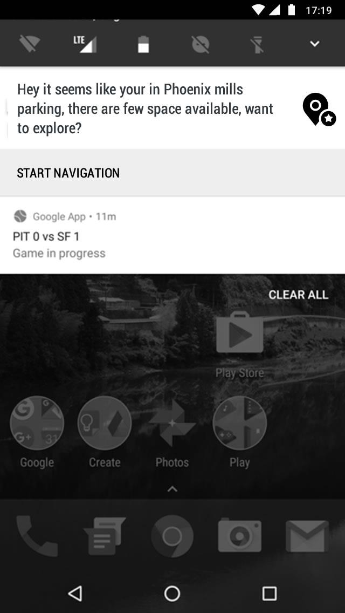
Proactive GPS Notification
- •Detects when a user enters a major mall or event parking zone (e.g., Phoenix Mills)
- •Prompts instant "START NAVIGATION" to guide the driver directly to open bays
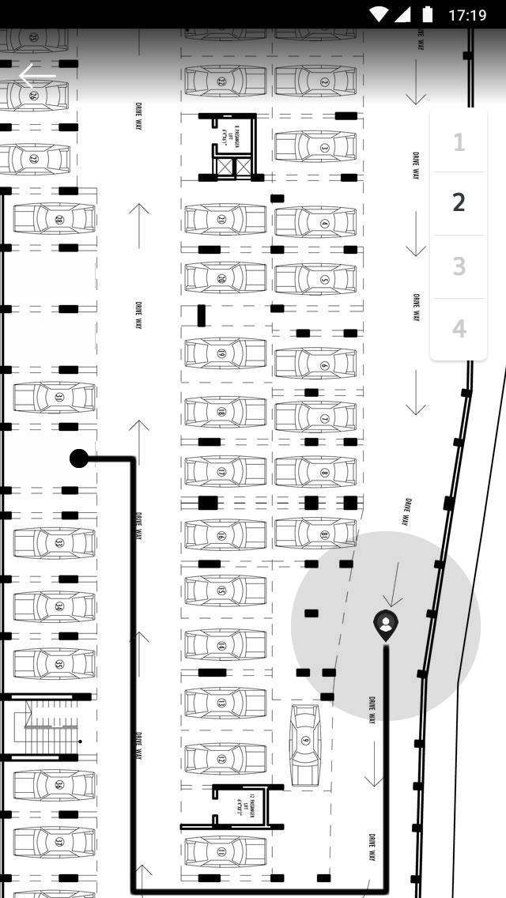
Indoor Bay & AR Navigation
- •Displays exact internal driveway path to the nearest available bay (AR-ready)
- •Tap any other unoccupied bay to dynamically re-route
- •Multi-Level Floor Selector (1, 2, 3, 4) to check availability across parking levels
Active Parking Timer, Automated Billing & Reviews
The experience doesn't end when the car stops. As the user parks and steps out, the app transitions into an active session tracker and closes the loop with a transparent digital receipt.
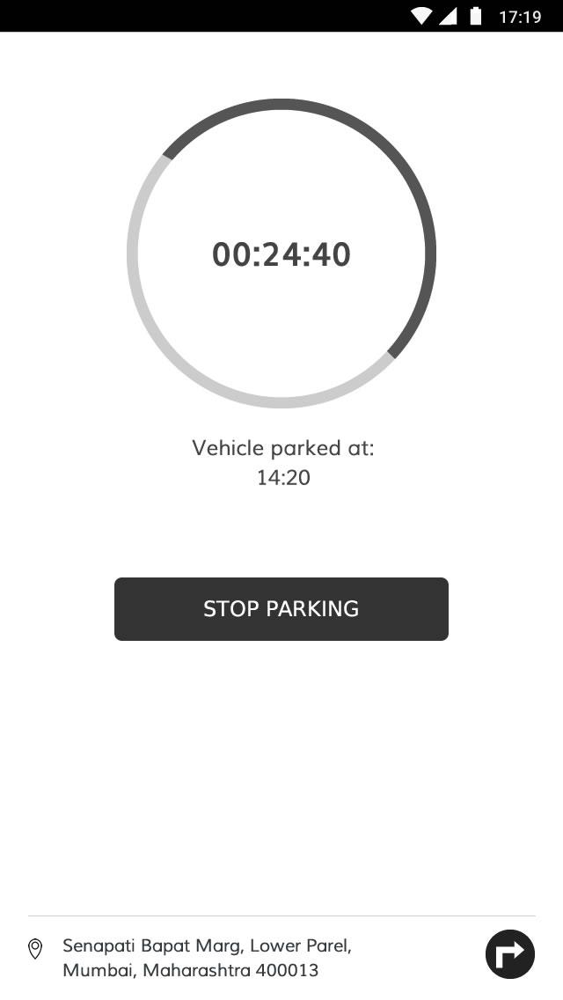
Tracking Parking Time
- •High-contrast circular progress timer (00:24:40) with exact parked timestamp (Vehicle parked at: 14:20)
- •Pinned location footer with direction link so users can easily navigate back to their parked vehicle after the event
- •Single prominent "STOP PARKING" CTA to end the session
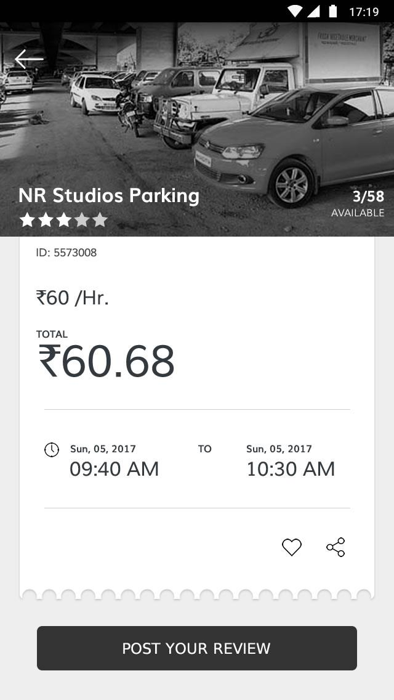
Parking Receipt & Feedback
- •Itemized digital ticket with Booking ID, hourly rate (₹60 /Hr.), total amount (₹60.68), and start/end timestamps
- •Quick actions to Save as Favorite (heart icon) or Share spot
- •"POST YOUR REVIEW" CTA to appreciate good service or flag facility issues for the community and authorities
Key Design Decisions
Problem: Event-Day Search Friction
During major concerts, matches, or festivals, users often know the event name rather than the exact street address or surrounding parking lot names. Standard map apps force users to search the venue first and then manually hunt for parking nearby.
Solution: Event-First Map Pins & Search Suggestions
Surfaced live city events both as floating callout badges on the initial map (within a 10km radius) and as a dedicated "Events in Your City" section inside the search dropdown—allowing 1-tap zooming to pre-configured event parking zones.
Problem: High-Cognitive Load While Driving
Drivers approaching a congested area cannot safely read dense text pages to compare prices, check if a lot accepts cars vs. two-wheelers, or start directions.
Solution: Persistent Car/Bike Toggle & 1-Tap Navigation Cards
Placed a visual Car/Bike toggle and direct turn-by-turn navigation buttons right on the summary bottom sheet and list cards. Drivers who want immediate routing can tap the direction icon directly from the list, while researchers can tap the card body for full details.
Problem: Indoor Multi-Level Lot Disorientation
Entering a large mall or stadium parking structure often results in circling endlessly across floors to find the few remaining unoccupied bays.
Solution: Proactive Geofence Notification & Multi-Floor Bay Map
Combined GPS geofencing (pushing a lock-screen notification upon entering a parking zone like Phoenix Mills) with an indoor schematic map showing occupied vs. free bays, floor switcher (Levels 1–4), interactive bay re-selection, and AR-ready path lines.
Strategic Assessment (SWOT)
Strengths
Covers the complete parking journey (pre-trip discovery, outdoor GPS, indoor floor bay routing, active timer, and post-session receipt) in a clean, low-friction UI.
Opportunities
Expand into pre-booking/reserving guaranteed bays tied to event ticket purchases, plus camera-based Augmented Reality (AR) windshield/phone overlays.
Weaknesses
Real-time bay-level accuracy inside indoor structures relies on IoT sensor infrastructure or operator integration at partner venues.
Threats
High concurrency during stadium-scale events can cause spot contention between the moment a driver selects a bay and physically arrives.